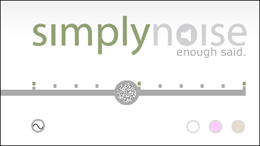
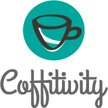
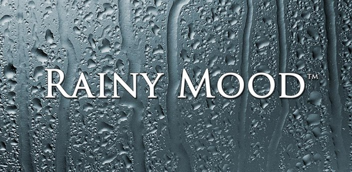

Here you will find websites that offer various sounds to loop:
Focus using different levels of white, brown, or pink noise.
Sometimes, silence is too loud. Simulate coffee shop noises to help you concentrate.
The pitter patter of rain is always soothing.
